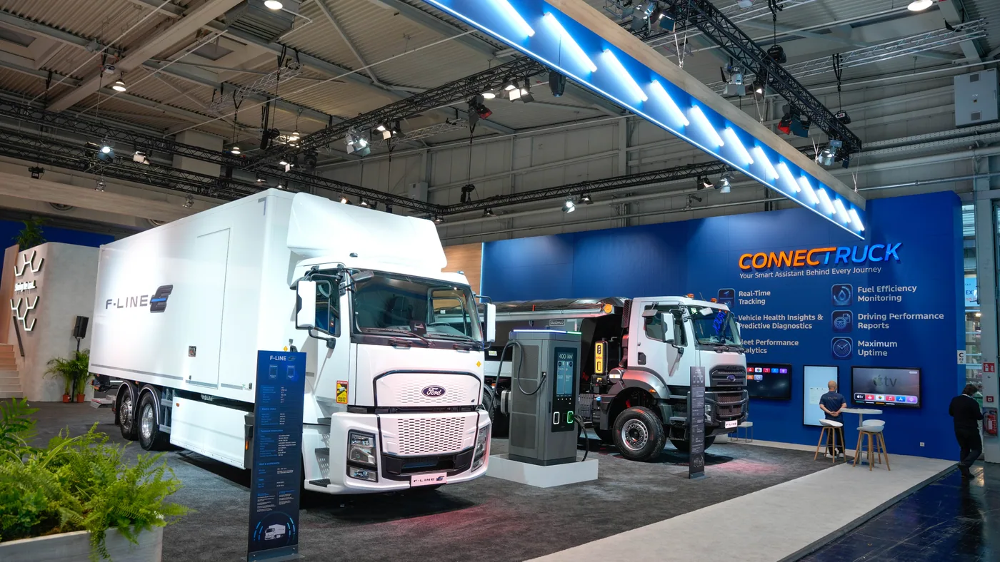

Ford Trucks difundió el 14 de septiembre de 2026 su presentación para IAA Transportation. La gama exhibida reúne al F-MAX GEN2.0, la línea de construcción F-LINE y el eléctrico F-LINE E. La feria de Hannover se desarrolla del 15 al 20 de septiembre.
El F-MAX incorpora el motor Ecotorq Gen2, cambios aerodinámicos y asistencias de conducción. La comunicación también destaca los servicios conectados ConnecTruck y la posibilidad de conocer distintas aplicaciones en un mismo espacio. Las fotografías oficiales muestran las unidades expuestas.
La novedad es internacional: este anuncio no confirma una oferta comercial argentina ni permite trasladar automáticamente sus configuraciones al país. Tampoco aporta un porcentaje de ahorro para asignar al conjunto de la gama.
Una marca, varias tareas diferentes
Análisis de Zabala Repuestos. Reunir camiones de aplicaciones distintas en una presentación ayuda a ver que una flota no se define únicamente por la marca que utiliza. El recorrido, la carga y el lugar de trabajo pueden pedir soluciones muy diferentes, incluso dentro de una misma empresa.
Antes de comparar versiones, conviene describir la tarea sin nombrar todavía un modelo. Dónde comienza, dónde termina, qué equipo necesita y qué dificultades encuentra son datos que permiten ordenar la consulta. Así, la selección parte del trabajo real y no de una preferencia por la unidad más llamativa de la exposición.
Larga distancia: mirar más que la potencia
En una evaluación de ruta, el conductor puede aportar observaciones sobre acceso, posición de manejo, controles y descanso. Es útil registrar esas experiencias por separado para que no queden resumidas en una opinión general. Una prueba debería permitir explicar qué funcionó bien y qué requirió adaptación.
Operaciones, por su parte, puede revisar cumplimiento de horarios y compatibilidad con el equipo habitual. Un vehículo puede resultar agradable de conducir y dejar preguntas pendientes sobre atención o configuración. Conviene reunir las distintas miradas antes de cerrar una conclusión.

Construcción y distribución necesitan su propia evaluación
Para una aplicación de obra, interesa conocer accesos, maniobras y coordinación con el equipo instalado. En distribución, la conversación puede centrarse en detenciones, recepción y horarios. No conviene utilizar una prueba de larga distancia como respuesta a necesidades que aparecen en otro entorno.
La descripción del servicio debería compartirse con todos los proveedores que intervienen. Chasis y carrocería no son decisiones aisladas: el operador necesita comprender cómo trabajará y cómo se atenderá el conjunto. Una propuesta clara identifica responsabilidades antes de la entrega.
Conectividad con un propósito definido
Para evaluar una herramienta digital, la empresa puede empezar preguntando qué decisión quiere mejorar. Organizar servicios, seguir incidencias o reunir antecedentes son objetivos diferentes. Definir uno permite comprobar si la información disponible llega a la persona correcta y en un formato que pueda utilizar.
También importa cómo se conserva el historial. La información debería seguir siendo accesible cuando cambia el responsable de una unidad. De esa forma, una consulta posterior no depende de reconstruir conversaciones ni de la memoria de quien atendió el último aviso.
Las preguntas pendientes para Argentina
- Qué versión puede ofrecerse y con qué documentación local.
- Qué cobertura de atención existe en los recorridos habituales.
- Qué equipamiento está incluido y qué requiere otra contratación.
- Cómo se identifican las piezas de la configuración final.
- Qué formación recibe el conductor y qué soporte tiene el taller.
La presentación es útil para conocer hacia dónde se mueve la oferta internacional. Su valor para una decisión local dependerá de las respuestas que puedan darse sobre una aplicación concreta. Un camión se elige para prestar un servicio durante años, no solamente por lo que muestra durante una feria.